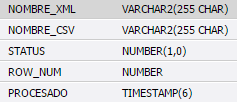
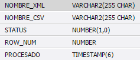
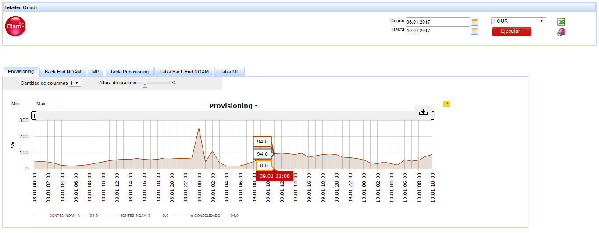

ALCATEL LTE URUGUAY - ENODB¶
1. OBJETIVO¶
El presente documento buscar explicar y detallar el proceso que genera ALCATEL LTE URUGUAY - ENODB.
2. ALCANCE¶
Áreas involucradas: Performance de Red.
3. DEFINICIONES¶
- Falda: Servidor UNIX en donde se importan los XML desde el proveedor, y en donde se encuentra Smart. El nombre es falda.claro.amx.
4. DESCRIPCIÓN GENERAL¶
ALCATEL LTE URUGUAY – ENODEB
La arquitectura de la red de acceso de LTE se compone de una única entidad de red denominada evolved NodeB (eNodeB) que constituye la estación base de E-UTRAN. Así pues, la estación base E-UTRAN integra toda la funcionalidad de la red de acceso. Este desarrollo permite almacenar y monitorear los Indicadores de Performance y los parámetros de configuración correspondientes a los eNodeB del vendor Alcatel instalados en Uruguay, con la finalidad de obtener datos estadísticos y poder visualizarlos en la plataforma SMART
5. MACROFLUJO DEL PROCESO¶

6. DESCRIPCIÓN DETALLADA¶
6.1. Datos Origen¶
Server Origen y Path: 10.111.102.62, /opt/5620sam/lte/stats/20160627/eNodeB/LCA003
Cantidad de archivos origen: Si
Por ejemplo:
o A20170130.0000-0300-0015-0300_eNodeB-LCA003.gz
Frecuencia actualización: Cada 15 min
Tipo de Archivo: xml
6.2. Datos Destino¶
- Server Destino: falda.claro.amx
- Conversión de Archivos: Si
- Tabla Files: Si
- Tabla Auxiliar: Si
- Frecuencia de corrida del proceso: 14 minutos aproximadamente
- Regionales: No
- RAW Si/No: Si
- Hour Si/No: Si
- Day Si/No: Si
- BH Si/No: Si
- ISABH Si/No: Si
- Países: Uruguay.
- Directorio Destino (File System): “/calidad/ENodeB/”
6.3. Shell Copiar Archivos Origen a Destino y limpieza de los mismos¶
Scripts tienen las siguientes funciones:
1- Copiar los archivos
2- Limpieza
3- Ejecutar Pentaho
Los scripts son los siguientes:
6.4. Listado de tablas utilizadas¶
Las tablas utilizadas son las siguientes:
- ERROR_LOG_NEW
- FILES
- LTE_C_ALC_UY_ENODEB_BH

- LTE_C_ALC_UY_ENODEB_DAY
 

- LTE_C_ALC_UY_ENODEB_DIC
- LTE_C_ALC_UY_ENODEB_HOUR
- LTE_C_ALC_UY_ENODEB_IBHW
- LTE_C_ALC_UY_ENODEB_RAW1
En esta tabla se obtiene los C”N”, con el valor hasta C627

- LTE_C_ALC_UY_ENODEB_RAW2
En esta tabla se obtiene los C”N”, con el valor hasta C627
- LTE_C_ALC_UY_ENODEB_RAW3
En esta tabla se obtiene los C”N”, con el valor hasta C627
- PROCESS_TO_RUN

- LTE_C_ALC_UY_ENODEB_RAW1_AUX (en esta tabla las columnas “C” va desde C1 y llegarían al C627)
- LTE_C_ALC_UY_ENODEB_RAW2_AUX (en esta tabla las columnas “C” va desde C628 y llegarían al C1202)
- LTE_C_ALC_UY_ENODEB_RAW3_AUX (en esta tabla las columnas “C” va desde C1203 y llegarían al C1202)
6.5. Pentaho¶
- Proceso Pentaho End to End
- Pentaho ParseXml
Este proceso parsea los archivos xml cada 15 minutos.
- Pentaho Get Files
Este proceso obtiene los archivos generados por el parser en formato csv, este archivo generado contiene 4 archivos xml de una misma hora, cada archivo se genera cada 15 minutos.
Luego de generar el csv, se guarda el nombre del archivo en la tabla Files.
- Pentaho Get FileName from Table
Una vez obtenido el csv, los datos son insertados en 3 tablas Raw.
El significado de cada columna de la tabla Raw se encuentra en la tabla LTE_C_ALC_UY_ENODEB_DIC
- Pentaho Populate Raw Aux
En este proceso se filtran los datos de las tablas Raw para ser insertados en las tablas Raw Aux para luego calcular los kpi correspondientes.
7. REPROCESO MANUAL¶
7.1 Administración de particiones¶
Antes de realizar el reproceso manual se debe realizar la administración de particiones, la cual se encarga de borrar los datos que serán reprocesados e insertados nuevamente a la tabla.
Para realizar este proceso se debe ejecutar la siguiente querie:
Parámetros:
- Nombre de la tabla
- Fecha desde (DD.MM.YYYY)
- Fecha hasta (DD.MM.YYYY)
Para todos los niveles se utilizan los mismos parámetros de ejecución.
Por ejemplo:
- G_PARTITION_MGMT.P_DROP_PARTITION_WEEK(‘CISCO_GGSN_EPDG_ISABHW’,‘01.01.2017’,‘07.01.2017’);
7.2 Macro Flujo de Reproceso¶

Este reproceso borra los registros para la hora que desee reprocesar, descargando los archivos para la hora necesaria y realiza el mismo procedimiento del macro flujo original.
Ubicación de los scripts en la carpeta: “/calidad/ENodeB/Scripts/”
Ubicación del Rework de ejecución en Pentaho: “/calidad/ENodeB/Rework/RunEnodeB.kjb”–
Para realizar el reproceso se debe ingresar los siguientes parámetros:
- Ruta del proyecto
- Fecha con formato YYYYMMDD
- Fecha con formato YYYYMMDD.HH24
- Fecha con formato DDMMYYYYHH24
Por consola se utiliza de la siguiente manera:
Ejecutando el siguiente script:
Al ejecutar el script ENodeBEndToEndRework, dentro del mismo se ejecuta el script syncro_enodeb_rework.
8. Smart¶
Se encuentran pendientes los gráficos.
9. CONTROL DE CAMBIOS¶
| Fecha | Responsable | Ticket Jira | Detalle | Repositorio |
|---|---|---|---|---|
| 17/02/2017 | Juan Lopez | RFC- Se creo la tabla objeto. | ||
| 08/02/2017 | Juan Lopez | RFC2 - Cambiar el nombre de columna de todas las tablas. Campo LNCEL_NAME por LNBTS_NAME y OBJ_MED por LNCEL_NAME | ||
| 09/02/2017 | Juan Lopez | RFC2 - Insertar en el campo OBJ_MED->LNCEL_NAME el nombre de la celda. | ||
| 23/02/2017 | Juan Lopez | RFC 2- Crear una semana de datos de prueba reales en falda. |